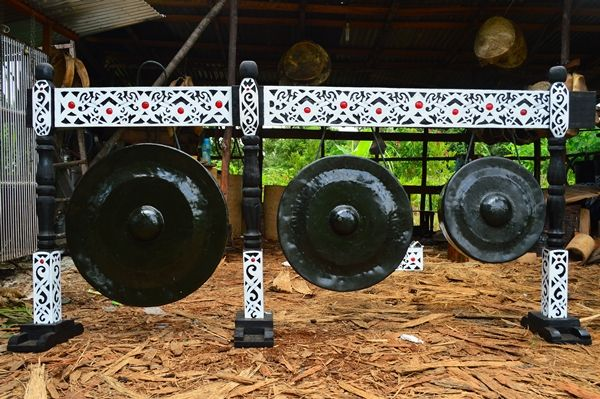
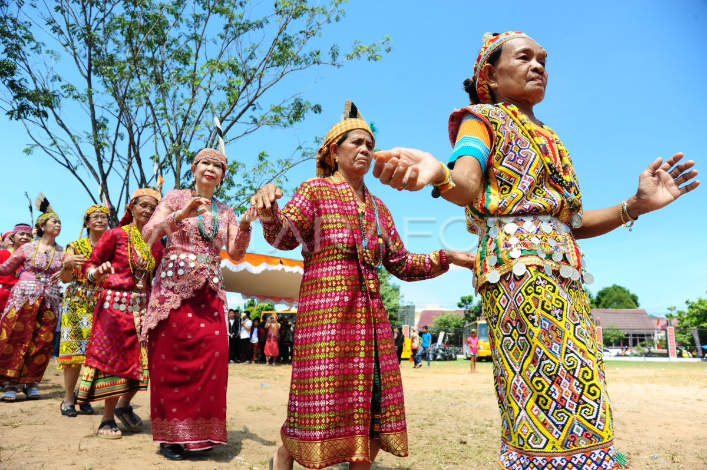
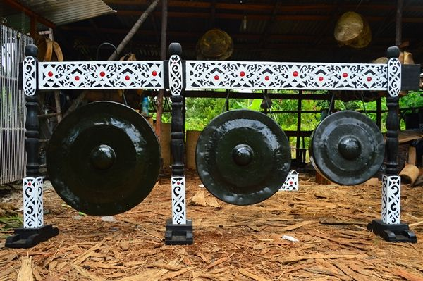
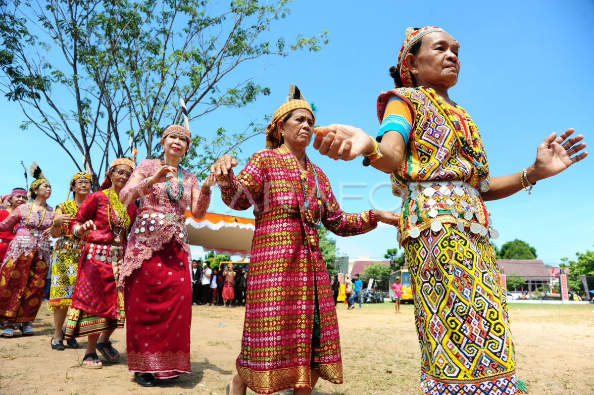

Suku Dayak Taman di Kabupaten Sekadau: Warisan Budaya yang Menjaga Alam dan Tradisi
Pendahuluan
Suku Dayak merupakan kelompok etnis asli yang tersebar di wilayah pedalaman Pulau Kalimantan. Salah satu sub‑suku Dayak yang unik dan menarik untuk dikaji adalah Suku Dayak Taman, yang mendiami wilayah Kabupaten Sekadau, Kalimantan Barat. Mereka bukan hanya pewaris budaya tradisional, tetapi juga penjaga hutan dan sungai yang menjadi pusat kehidupan masyarakat adat.
Asal Usul dan Persebaran
Suku Dayak Taman tergolong dalam rumpun Dayak Klemantan. Mereka umumnya menetap di sepanjang aliran Sungai Kapuas dan anak‑anak sungainya, terutama di daerah perbatasan antara Kabupaten Sekadau dan Kapuas Hulu. Sejumlah desa yang dikenal sebagai pemukiman Dayak Taman antara lain Nanga Mahap, Tapang Sambas, dan Nanga Kiungkang.
Bahasa dan Identitas
Suku Dayak Taman memiliki bahasa sendiri yang disebut Bahasa Taman, bagian dari rumpun bahasa Austronesia. Meskipun banyak dari mereka kini juga fasih dalam Bahasa Indonesia dan Bahasa Melayu dialek Sekadau, bahasa ibu tetap dipertahankan dalam lingkungan komunitas untuk menjaga identitas budaya.
Sistem Kepercayaan dan Adat
Secara historis, Suku Dayak Taman menganut kepercayaan animisme, yang dikenal dengan istilah Kaharingan. Namun, banyak dari mereka kini telah memeluk agama Katolik dan Kristen Protestan, hasil dari pengaruh misi gereja sejak awal abad ke‑20. Meskipun begitu, ritual adat dan tradisi leluhur seperti upacara panen (begawai), pesta syukuran (nyapat tahun), dan adat kematian (nyaruan) masih dipraktikkan sebagai bentuk penghormatan terhadap roh leluhur dan alam.
Kehidupan Sosial dan Ekonomi
Sebagian besar masyarakat Dayak Taman menggantungkan hidup dari berladang secara tradisional, berburu, menangkap ikan, dan menyadap karet. Mereka hidup dalam komunitas yang harmonis, biasanya tinggal di rumah panjang (betang) yang dihuni banyak keluarga. Rumah panjang bukan hanya tempat tinggal, tetapi juga pusat kegiatan sosial dan budaya.
Seni dan Budaya
Kesenian Dayak Taman tercermin dalam tarian tradisional, musik gong dan ketawak, serta kerajinan tangan seperti anyaman, ukiran kayu, dan pembuatan senjata tradisional (mandau). Mereka juga memiliki pakaian adat khas yang dikenakan saat upacara adat dan perayaan, yang dihiasi manik‑manik dan corak motif alam.
Tantangan dan Pelestarian Budaya
Seperti suku‑suku adat lainnya di Kalimantan, Dayak Taman juga menghadapi tantangan modernisasi dan perambahan lahan. Pembukaan hutan untuk sawit dan tambang berdampak pada ruang hidup mereka. Namun, banyak tokoh masyarakat dan generasi muda yang mulai aktif menggalang pelestarian budaya melalui pendokumentasian tradisi, pendidikan adat, dan wisata budaya berbasis komunitas.
Penutup
Suku Dayak Taman di Kabupaten Sekadau merupakan bagian tak terpisahkan dari kekayaan budaya Indonesia. Keunikan mereka dalam memadukan adat istiadat, kearifan lokal, dan adaptasi terhadap zaman menjadikan mereka komunitas yang kuat dan berakar. Melestarikan budaya Dayak Taman berarti menjaga identitas bangsa dan keberlanjutan alam Kalimantan.
← Kembali ke Beranda